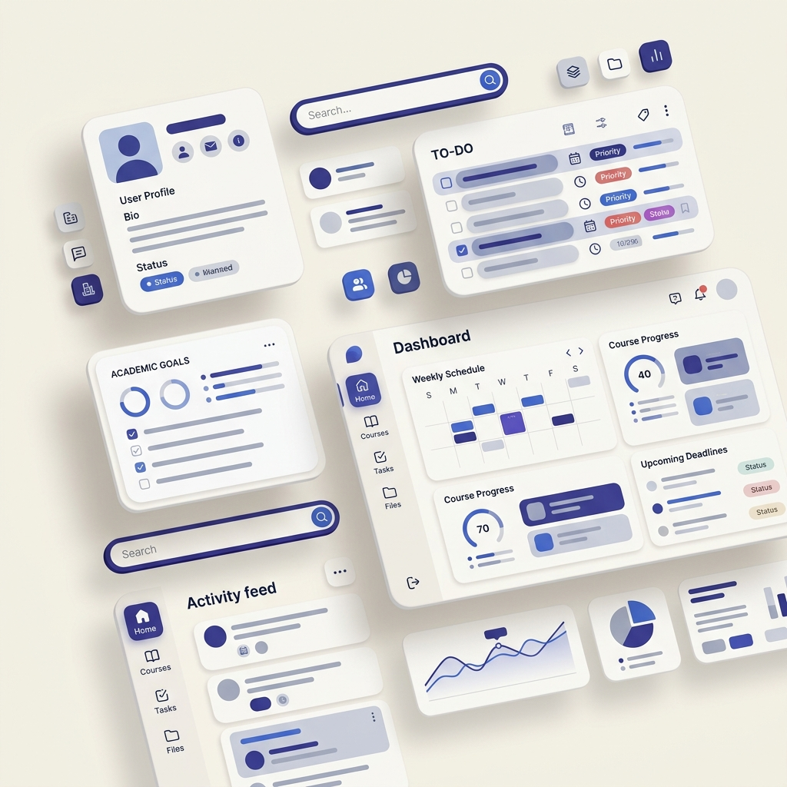
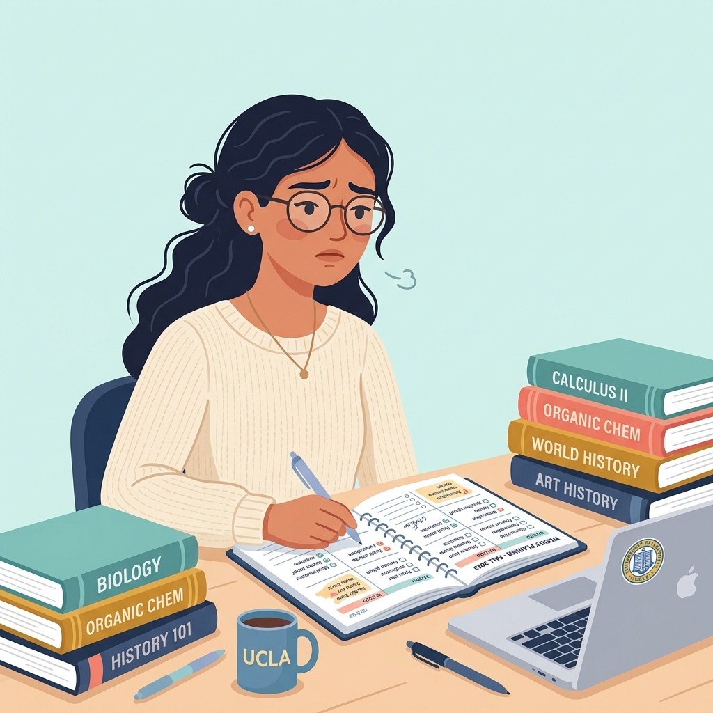

Turning research patterns into realistic user profiles for designing a student-focused productivity experience.
An exploration of student behaviors, motivations, goals, and pain points to create research-informed personas for StudyFlow.

UX Researcher / UI/UX Intern
StudyFlow
User Persona Development
Education / Productivity
College Students
Figma, HTML, CSS, JavaScript
Sample persona study — simulated data for educational and portfolio demonstration purposes.
User personas help transform research observations into clear representations of target users. They allow designers to keep user goals, behaviors, frustrations, and motivations at the center of product decisions.
Understand the emotional state and context of the user to design solutions that truly resonate.
Pinpoint exactly what the user needs to achieve their goals without unnecessary features.
Make informed decisions about which features provide the most value to specific user segments.
Create a shared understanding among stakeholders about who the product is being built for.
Distill complex research data into digestible, humanized formats.
All personas are derived from simulated research data based on common college student behaviors.
Sample interviews with 8 fictional college students.
Sample survey data from 30 fictional responses.
Sample task-based testing with 6 fictional participants.
Primary Audience: College Students (Approx. Age: 18–24)
Simulated behavioral groups based on patterns identified in the research context.
Plans tasks ahead of deadlines.
Manages several assignments simultaneously.
Often delays tasks until deadlines approach.
Gather research observations.
Look for recurring behaviors.
Cluster users based on similarities.
Identify goals, frustrations and motivations.
Turn patterns into representative profiles.
Compare personas against research evidence.
Sample persona based on simulated research patterns.

Age: 20 | Occupation: College Student
Undergraduate student managing assignments, projects and examinations. Ananya wants to stay organized but often struggles when several academic deadlines overlap.
"I know what I need to finish, but when everything feels urgent, I don't know where to start."
Motivations: Academic success, feeling organized, completing tasks early, reducing stress, maintaining consistency.
Devices: Smartphone, Laptop
Common Tools: Calendar apps, Notes apps, Messaging apps, To-do applications
Sample persona based on simulated research patterns.
Age: 21 | Occupation: College Student
Rahul tends to postpone academic tasks and becomes highly focused when deadlines approach.
"I usually start working seriously when the deadline is close."
Both represent different user needs within the same target audience. They are not ranked; rather, they highlight the necessity of designing for diverse behavioral patterns.
| Attribute | Ananya (The Overloaded Planner) | Rahul (The Last-Minute Learner) |
|---|---|---|
| Planning Style | Plans but struggles with workload | Often starts late |
| Main Challenge | Prioritization | Procrastination |
| Motivation | Organization | Deadlines & progress |
| Key Need | Workload clarity | Simple planning |
| Preferred Support | Priority & scheduling | Reminders & progress |
Illustrative statements to build empathy and understand emotional experiences.
"I have too many deadlines this week."
"Which assignment should I start with?"
Checks deadlines and creates task lists.
Overwhelmed when deadlines overlap.
"I'll start it tomorrow."
"I still have enough time."
Delays tasks until deadlines become urgent.
Relaxed initially, stressed closer to deadlines.
Design recommendations based on the simulated personas.
Ananya struggles with overlapping deadlines.
Clear workload and priority visibility.
Help students understand what requires attention first.
Priority Dashboard
Rahul delays tasks until deadlines approach.
Timely reminders and progress feedback.
Encourage users to start tasks earlier.
Smart Reminder + Progress System
Students use multiple disjointed tools.
Centralized view of tasks and classes.
Combine academic and personal planning.
Unified Weekly Planner
Students struggle with large, overwhelming tasks.
Break large tasks into manageable actions.
Guide users to plan step-by-step.
Sub-task Checklists
In a real UX project, personas are not static; they must be validated and refined.
Personas turn research patterns into understandable user profiles.
Different students can have different behaviors even when they share the same demographic group.
Behavioral patterns are more useful for UX decisions than assumptions based only on age or occupation.
Personas should evolve as new research evidence becomes available.
Sample interviews, surveys and usability observations.
Identify recurring behaviors, motivations and challenges.
Group users with similar behavioral patterns.
Create representative profiles.
Translate user needs into product opportunities.